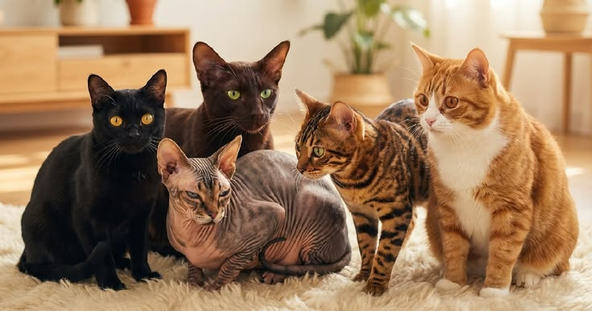
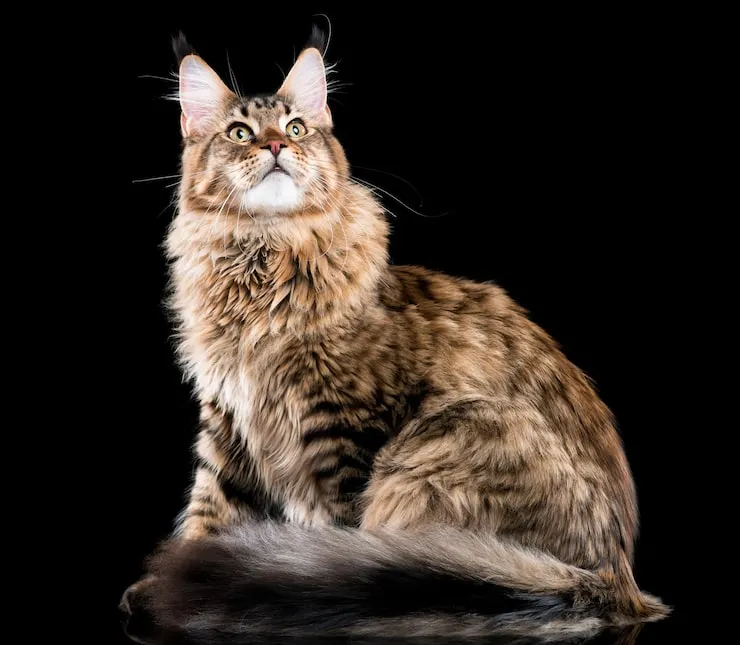
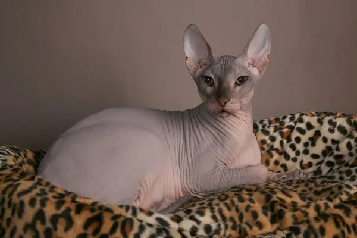

Os gatos domésticos apresentam uma grande variedade de características, tamanhos, cores e tipos de pelagem. Ao longo dos anos, diferentes raças foram desenvolvidas e passaram a apresentar características próprias. Conheça abaixo sete raças bastante conhecidas!

O Persa é conhecido principalmente por sua pelagem longa, abundante e por seu rosto arredondado. É uma raça tradicionalmente associada a um comportamento tranquilo e costuma apreciar ambientes calmos. Sua aparência marcante fez com que se tornasse uma das raças de gatos mais reconhecidas no mundo.

O Siamês é facilmente reconhecido pelo corpo claro, extremidades mais escuras e olhos geralmente azuis. É uma raça conhecida por ser bastante comunicativa, curiosa e sociável. Os gatos siameses também costumam formar vínculos próximos com as pessoas com quem convivem.

O Maine Coon é uma das maiores raças de gatos domésticos. Possui uma pelagem longa e volumosa, cauda bastante característica e um corpo robusto. Apesar do tamanho impressionante, é frequentemente descrito como um gato sociável e de comportamento amigável.

O Bengal chama atenção principalmente por sua pelagem marcada por manchas ou padrões que lembram alguns felinos selvagens. É uma raça conhecida por ser ativa, curiosa e bastante brincalhona, apresentando um corpo atlético e aparência bastante característica.

O Sphynx é uma das raças mais fáceis de reconhecer. Apesar da aparência praticamente sem pelos, sua pele possui uma fina camada de pelos muito curtos. É um gato conhecido por ser sociável, curioso e bastante ligado às pessoas.

O British Shorthair, ou Pelo Curto Britânico, possui corpo compacto, cabeça arredondada e uma pelagem curta e densa. A variedade azul-acinzentada é especialmente conhecida, mas a raça apresenta diversas outras cores e padrões. Seu comportamento costuma ser descrito como tranquilo e equilibrado.

O Ragdoll é uma raça de pelo longo, conhecida pelos olhos azuis e pelos padrões de coloração característicos. Seu nome, que significa "boneca de pano" em inglês, está relacionado à fama de relaxar bastante quando é carregado. A raça teve origem nos Estados Unidos e é conhecida por seu comportamento dócil e tranquilo.
Cada raça possui características próprias, desde a aparência até o comportamento. Conhecer essas diferenças ajuda a entender melhor a diversidade existente entre os gatos domésticos. E, claro, cada gato também possui sua própria personalidade, independentemente de sua raça!